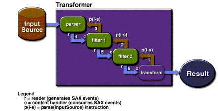

Concatenating Transformations with a Filter Chain
It is sometimes useful to create a filter chain: a concatenation of XSLT transformations in which the output of one transformation becomes the input of the next. This section shows you how to do that.
Writing the Program
Start by writing a program to do the filtering. This example shows the full source code, but to make things easier you can use one of the programs you've been working on as a basis.
Note: The code described here is contained in
FilterChain.java.
The sample program includes the import statements that identify the package locations for each class:
import javax.xml.parsers.FactoryConfigurationError; import javax.xml.parsers.ParserConfigurationException; import javax.xml.parsers.SAXParser; import javax.xml.parsers.SAXParserFactory; import org.xml.sax.SAXException; import org.xml.sax.SAXParseException; import org.xml.sax.InputSource; import org.xml.sax.XMLReader; import org.xml.sax.XMLFilter; import javax.xml.transform.Transformer; import javax.xml.transform.TransformerException; import javax.xml.transform.TransformerFactory; import javax.xml.transform.TransformerConfigurationException; import javax.xml.transform.sax.SAXTransformerFactory; import javax.xml.transform.sax.SAXSource; import javax.xml.transform.sax.SAXResult; import javax.xml.transform.stream.StreamSource; import javax.xml.transform.stream.StreamResult; import java.io.*;The program also includes the standard error handlers you're used to. They're listed here, all gathered together in one place:
} catch (TransformerConfigurationException tce) { // Error generated by the parser System.out.println ("* Transformer Factory error"); System.out.println(" " + tce.getMessage() ); // Use the contained exception, if any Throwable x = tce; if (tce.getException() != null) x = tce.getException(); x.printStackTrace(); } catch (TransformerException te) { // Error generated by the parser System.out.println ("* Transformation error"); System.out.println(" " + te.getMessage() ); // Use the contained exception, if any Throwable x = te; if (te.getException() != null) x = te.getException(); x.printStackTrace(); } catch (SAXException sxe) { // Error generated by this application // (or a parser-initialization error) Exception x = sxe; if (sxe.getException() != null) x = sxe.getException(); x.printStackTrace(); } catch (ParserConfigurationException pce) { // Parser with specified options can't be built pce.printStackTrace(); } catch (IOException ioe) { // I/O error ioe.printStackTrace(); }Between the import statements and the error handling, the core of the program consists of the following code.
public static void main (String argv[]) { if (argv.length != 3) { System.err.println ( "Usage: java FilterChain style1 style2 xmlfile"); System.exit (1); } try { // Read the arguments File stylesheet1 = new File(argv[0]); File stylesheet2 = new File(argv[1]); File datafile = new File(argv[2]); // Set up the input stream BufferedInputStream bis = new BufferedInputStream(newFileInputStream(datafile)); InputSource input = new InputSource(bis); // Set up to read the input file(see Note #1)SAXParserFactory spf = SAXParserFactory.newInstance(); spf.setNamespaceAware(true); SAXParser parser = spf.newSAXParser(); XMLReader reader = parser.getXMLReader(); // Create the filters(see Note #2)SAXTransformerFactory stf = (SAXTransformerFactory) TransformerFactory.newInstance(); XMLFilter filter1 = stf.newXMLFilter( new StreamSource(stylesheet1)); XMLFilter filter2 = stf.newXMLFilter( new StreamSource(stylesheet2)); // Wire the output of the reader to filter1(see Note #3)// and the output of filter1 to filter2 filter1.setParent(reader); filter2.setParent(filter1); // Set up the output stream StreamResult result = new StreamResult(System.out); // Set up the transformer to process the SAX events generated // by the last filter in the chain Transformer transformer = stf.newTransformer(); SAXSource transformSource = new SAXSource( filter2, input); transformer.transform(transformSource, result); } catch (...) { ...Notes:
- The Xalan transformation engine currently requires a namespace-aware SAX parser.
- This weird bit of code is explained by the fact that
SAXTransformerFactoryextendsTransformerFactory, adding methods to obtain filter objects. ThenewInstance()method is a static method (defined inTransformerFactory), which (naturally enough) returns aTransformerFactoryobject. In reality, though, it returns aSAXTransformerFactory. So to get at the extra methods defined bySAXTransformerFactory, the return value must be cast to the actual type.- An
XMLFilterobject is both a SAX reader and a SAX content handler. As a SAX reader, it generates SAX events to whatever object has registered to receive them. As a content handler, it consumes SAX events generated by its "parent" object--which is, of necessity, a SAX reader as well. (Calling the event generator a "parent" must make sense when looking at the internal architecture. From an external perspective, the name doesn't appear to be particularly fitting.) The fact that filters both generate and consume SAX events allows them to be chained together.Understanding How the Filter Chain Works
The code listed earlier shows you how to set up the transformation. Figure 7-2 should help you understand what's happening when it executes.

Figure 7-2 Operation of Chained Filters
When you create the transformer, you pass it a
SAXSourceobject, which encapsulates a reader (in this case,filter2) and an input stream. You also pass it a pointer to the result stream, where it directs its output. Figure 7-2 shows what happens when you invoketransform()on the transformer. Here is an explanation of the steps:
- The transformer sets up an internal object as the content handler for
filter2and tells it to parse the input source.filter2, in turn, sets itself up as the content handler forfilter1and tells it to parse the input source.filter1, in turn, tells theparserobject to parse the input source.- The
parserdoes so, generating SAX events, which it passes tofilter1.filter1, acting in its capacity as a content handler, processes the events and does its transformations. Then, acting in its capacity as a SAX reader (XMLReader), it sends SAX events tofilter2.filter2does the same, sending its events to the transformer's content handler, which generates the output stream.Testing the Program
To try out the program, you'll create an XML file based on a tiny fraction of the XML
DocBookformat, and convert it to theARTICLEformat defined here. Then you'll apply theARTICLEstylesheet to generate an HTML version. (TheDocBookspecification is large and complex. For other simplified formats, see Further Information.)
Note: This example processes
small-docbook-article.xmlusingdocbookToArticle.xslandarticle1c.xsl. The result isfilterout.html(The browser-displayable versions aresmall-docbook-article-xml.html,docbookToArticle-xsl.html,article1c-xsl.html, andfilterout-src.html.)
Start by creating a small article that uses a minute subset of the XML
DocBookformat:<?xml version="1.0"?> <Article> <ArtHeader> <Title>Title of my (Docbook) article</Title> </ArtHeader> <Sect1> <Title>Title of Section 1.</Title> <Para>This is a paragraph.</Para> </Sect1> </Article>Next, create a stylesheet to convert it into the
ARTICLEformat:<xsl:stylesheet xmlns:xsl="http://www.w3.org/1999/XSL/Transform" version="1.0" > <xsl:output method="xml"/>(see Note 1)<xsl:template match="/"> <ARTICLE> <xsl:apply-templates/> </ARTICLE> </xsl:template> <!-- Lower level titles strip element tag -->(see Note 2)<!-- Top-level title --> <xsl:template match="/Article/ArtHeader/Title">(Note 3)<TITLE> <xsl:apply-templates/> </TITLE> </xsl:template> <xsl:template match="//Sect1">(see Note 4)<SECT><xsl:apply-templates/></SECT> </xsl:template> <xsl:template match="Para"> <PARA><xsl:apply-templates/></PARA>(see Note 5)</xsl:template> </xsl:stylesheet>Notes:
- This time, the stylesheet is generating XML output.
- The template that follows (for the top-level title element) matches only the main title. For section titles, the
TITLEtag gets stripped. (Because no template conversion governs those title elements, they are ignored. The text nodes they contain, however, are still echoed as a result of XSLT's built-in template rules--so only the tag is ignored, not the text.)- The title from the
DocBookarticle header becomes theARTICLEtitle.- Numbered section tags are converted to plain
SECTtags.- This template carries out a case conversion, so
ParabecomesPARA.Although it hasn't been mentioned explicitly, XSLT defines a number of built-in (default) template rules. The complete set is listed in section 5.8 of the specification. Mainly, these rules provide for the automatic copying of text and attribute nodes and for skipping comments and processing instructions. They also dictate that inner elements are processed, even when their containing tags don't have templates. That is why the text node in the section title is processed, even though the section title is not covered by any template.
Now run the
FilterChainprogram, passing it the stylesheet (docbookToArticle.xsl), theARTICLEstylesheet (article1c.xsl), and the smallDocBookfile (small-docbook-article.xml), in that order. The result should like this:<html> <body> <h1 align="center">Title of my (Docbook) article</h1> <h2>Title of Section 1.</h2> <p>This is a paragraph.</p> </body> </html>
Note: This output was generated using JAXP 1.0. However, with some later versions of JAXP, the first filter in the chain does not translate any of the tags in the input file. If you have one of those versions, the output you see will consist of concatenated plain text in the HTML output, like this: "
Title of my (Docbook) article Title of Section 1. This is a paragraph.".
All of the material in The J2EE(TM) 1.4 Tutorial is copyright-protected and may not be published in other works without express written permission from Sun Microsystems.